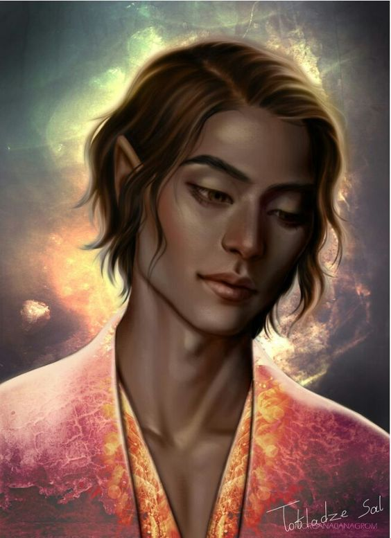

Com nuvens cor de cobalto, macias e magnânimas, tingidas por um dos muitos alvoreceres rosados e com luz dourada que contém na corte, com bordas arredondadas, com campos verdes, exuberantes e completos de verão, cheios de cidades com telhados vermelhos e rios amplos e reluzentes e vários palácios dentro do território. Cheiro de um frescor orvalhado da manhã. Ela é descrita como umas das cortes mais bonitas. O território da Corte Crepuscular é dividido em pequenas cidades que se especializaram em produzir relojoaria e coisas inteligentes.
Thesan, é o Grão-Senhor da Corte Crepuscular é considerado “Aquele que brilha mais entre todos ” os Grão-Senhores e deu uma gota de luz a Feyre em Uma Corte de Espinhos e Rosas dando a ela a habilidade de curar.
A residência pessoal do Grão-Senhor da Corte Crepuscular é um palácio montanhoso nas nuvens, feito do que só pode ser descrito como pedra-do-sol, uma pedra dourada quase opalescente que parece conter o brilho de mil crepúsculos no seu interior. Degraus e varandas, arcadas, balcoes e pontes ligavam as torres e as cúpulas douradas do palácio,com flores de pervinca subindo pelos pilares e cortando com precisão os blocos de bebedouros de pedra com névoas douradas flutuantes. Com a paisagem verdejante ondulando muito abaixo, salpicado de vilarejos de telhados vermelho ladeados por um rio largo e cintilante. Um campo verdejante e eterno reluzindo sob os raios do verão.